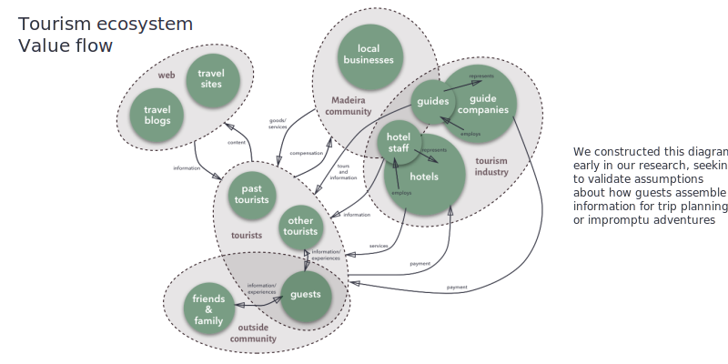
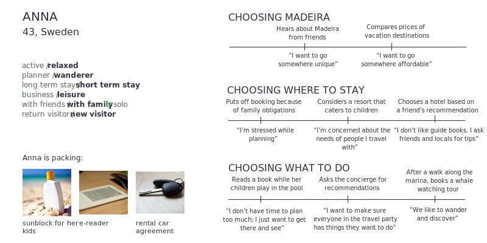

Travelers to Madeira
In order to get a broad look at tourism in Madeira and the needs of travelers on the island, we interviewed tourists on the street and each spent a day experiencing typical tourism activities on the island. From these first-hand research activities and reports issued by the Madeira tourism board, we learned that:- Madeira is seen as an easy getaway for European visitors, who come primarily for the natural beauty and weather
- Most visitors come from the UK or Germany, travel as a couple, and stay for at least one week
- Some visitors plan extensively, others play it by ear
- Visitor choose a mix of guided activities and self-guided excursions
Interviews with experienced travelers
We also conducted interviews to explore the entire travel process, from planning through execution through reflection. The interviews were intended to be Madeira/island-agnostic, encompassing travel goals and processes more generally. We selected people who fit the following profile:- Frequent and/or recent traveler
- Possess contemporary habits and tastes (e.g., self-guided research, comfort with tech and the internet for travel, exemplify the trend of “travel” over “tourism”)
- Enjoy a comfort with — or even affinity for — new service models (e.g., Airbnb), since those trends are likely to continue
Participatory design workshop
After conducting a series of interviews, we embarked on a participatory design sprint to validate our research and begin exploring ideas.Over the course of two 1-hour sessions, we alternated brainstorming in pairs with discussing insights in larger groups. Participants were first asked to engage in a directed storytelling exercise about recent trips they had taken, paying critical attention to the feelings and motivations underlying their actions. Following a quick debrief about what had emerged as noteworthy or surprising, the participants were distributed prompts that matched stakeholders to motivations. They were then asked to explore how to design for touchpoints in the context of their prompts.
Insights
- Travelers want the independence that comes with feeling informed about their surroundings
- Knowing the history and idiosyncracies of a place enhances enjoyment
- Travelers seek out locations where they will encounter locals
- Travelers often feel skeptical of faceless reviews, but personal recommendations are strong motivators
- Minimal planning is done ahead of time; most embark on their trips with only a rough idea of what they want to do and see




To explore guest sentiments, we examined what people said in interviews, what they wrote online, and how they navigated hotels’ public spaces. These three approaches gave us a multifaceted look at how travelers to Madeira think about accommodation.
Many hotels offer custom applications that can connect guests to concierge services, allow booking, and offer local tips. The success of these touchpoints was dependent on the usability of the touchpoint itself, which varied greatly. Frequently, these touchpoints did not work as intended or did not meet guest needs (e.g., supporting booking a stay when currently on a trip). In these instances, they came across as a “techy” gimmick (one manager described his hotel's app as “merely a gadget”). Some tech choices added great value, however: Context-aware messages on a digital panel in an elevator (“You’re awake, early bird: Check out is not until 10am”) were appreciated, and served to softly promote the brand.
As we approached ideation, we were reminded that slapping technology onto a problem is not effective. Much of the technology we encountered seemed to be part of the theme of the hotels visited but rarely boosted the service quality — we want to avoid solutions that “sprinkle some screens” onto the current offerings. Our challenge was to find a way to substantially improve the service or allow the hotel to offer something new.
Each hotel we studied had a unique set of service offerings. We grouped innovative services into six categories to explore different opportunity spaces. By taking these into consideration, hotels are better positioned to provide service for guests at different touchpoints based on individual needs and desires.